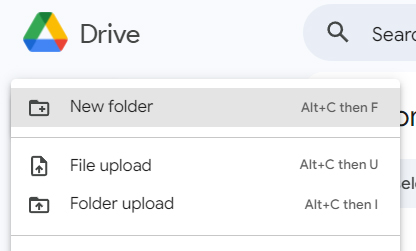
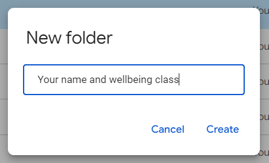
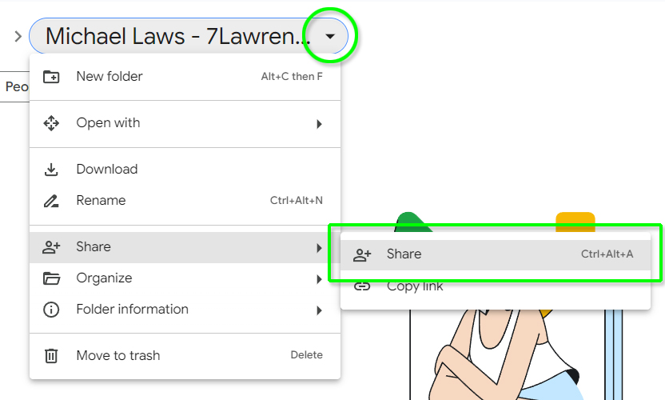
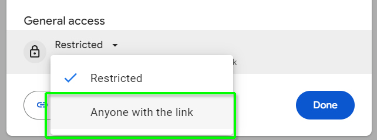
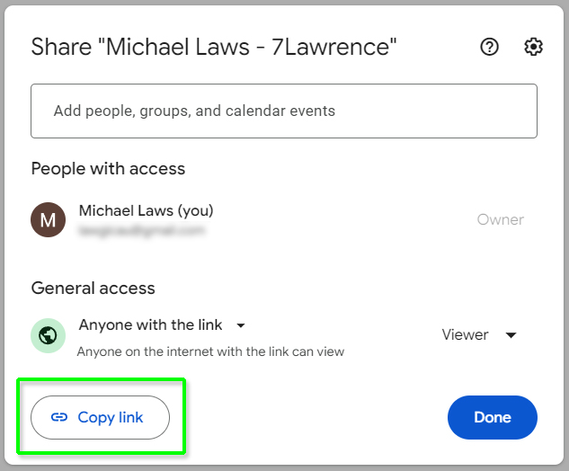

The French government needs you and your design skills!
Following the Paris 2024 Olympics, the French government is desperately trying to recoup €1,500,000,000 that was required to make the iconic Seine river sanitary. The Seine had been closed for swimming for safety reasons since 1923, as during periods of heavy rainfall, sewage contaminated the water and introduced E. coli bacteria. Unfortunately, rainfall at the start of the games meant some swimming events still had to be delayed. The reputation of Paris had taken a financial and repuational hit.
The government's solution is to sell very unique pieces of memorabilia: Paris 2024 Olympic edition vials of Seine water with a certificate of authenticity. They call it Flacon d'eau de caca. However, in their haste, they committed to a transport box that would allow the vial move around dangerously. A cheap, eco friendly packaging solution is needed to keep the item safe and also restore the prestige of the famous river.
Design a piece of packaging to prevent a glass vial from being smashed during international shipping. The packaging should be as cheap and eco friendly as possible, whilst still maintaining adequate protection and offering visual style fitting of Olympic memorabilia.
The glass vial measures approximately 41mm in diameter, with a height of 105mm.
A good basis for comparison is a 30g spice jar.
The packaging box has internal dimensions of 220 x 160 x 70 mm, which is large enough to hold an A5 certificate of authenticity and the glass vial.
It is based on an Australia Post Small Parcel box.
Students are to digitally submit the following items:
All submitted materials must be anonymous to be eligible. Do not show your face, uniform or use any identifying information beyond your first name. Voice recording in the video is encouraged, but please ensure the audio has sufficient clarity.
Also ensure that your submissions are YouTube friendly. This means no copyrighted materials or inappropriate content.
Entries will be assessed across four areas:
Submissions will first be screened for eligibility to eliminate entries that have failed to meet key requirements. Judges will then collaborate to decide a winner based on the above criteria.
Leading submissions will be showcased in a video on the Teaching Tech YouTube channel. Viewers will have an opportunity to vote on a People's Choice award.
First prize, as decided by the judges, is a brand new Prusa Mini+ 3D printer kit, valued at $659 + postage.

The people's choice prize, as voted for by Teaching Tech viewers, is $100 in cash.
The following tips may prove helpful:
Using your school Google account, create a new folder in Drive.
Rename the folder to have your name and wellbeing class name.
Open the folder. Then click the down arrow to the right of the folder name and go to Share > Share.
Set the General access settings to 'Anyone with the link'.
The dialogue should now say 'Anyone on the internet with a link can view'. Add your submission files as per the instructions at the top of the page. When done, click 'Copy Link' and email the link to the teacher listed on your Google classroom page (with a clear and descriptive subject line).
Entries close Monday week 2, term 4 (21st October 2024). Please ensure you have followed competition guidelines and submit your items before this date.